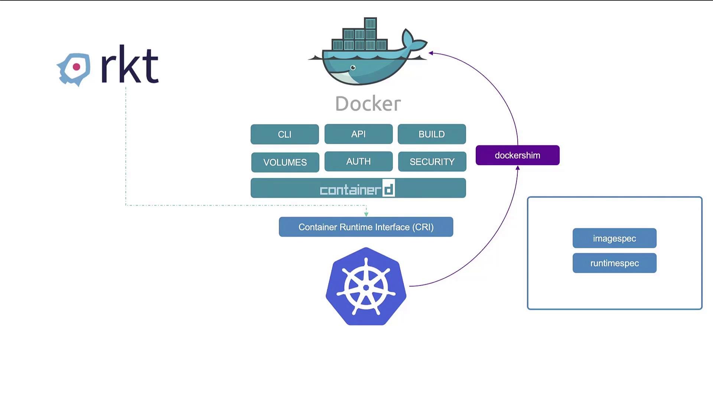
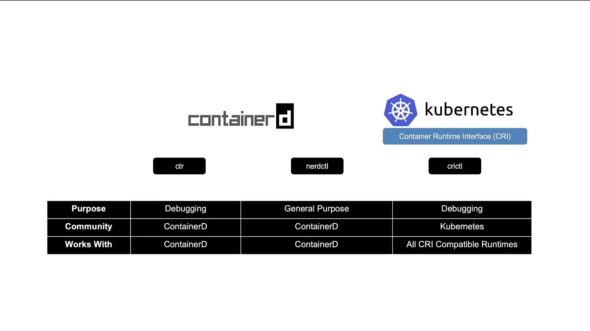
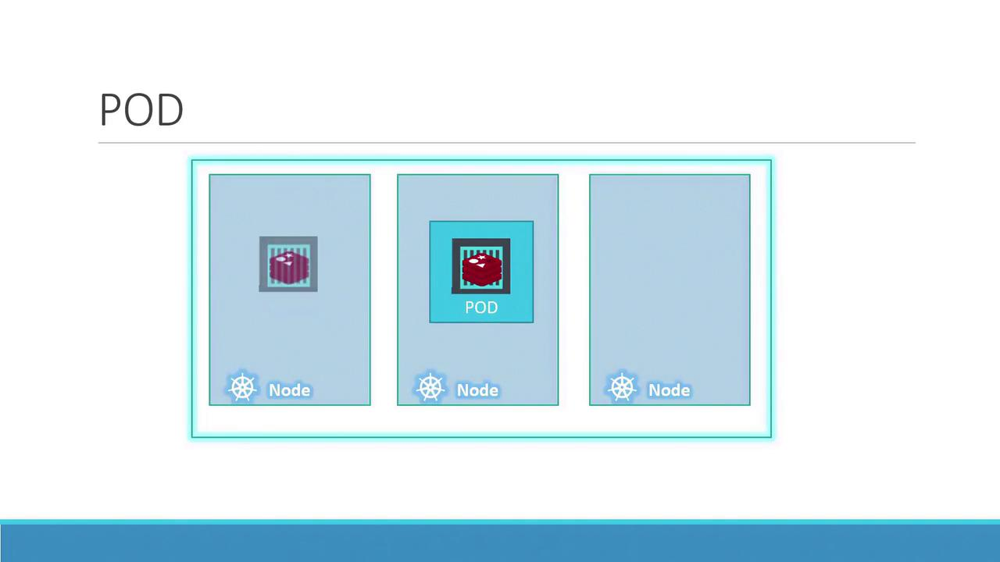
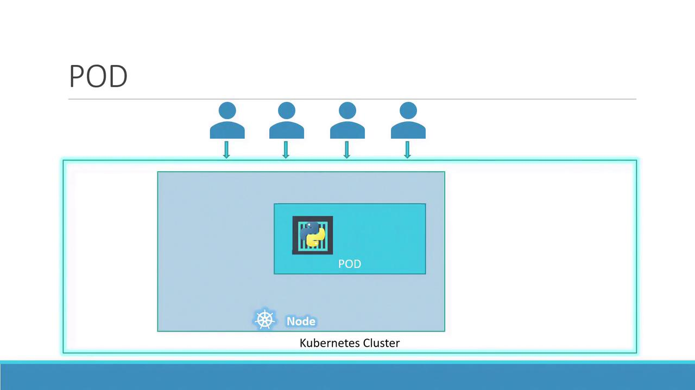
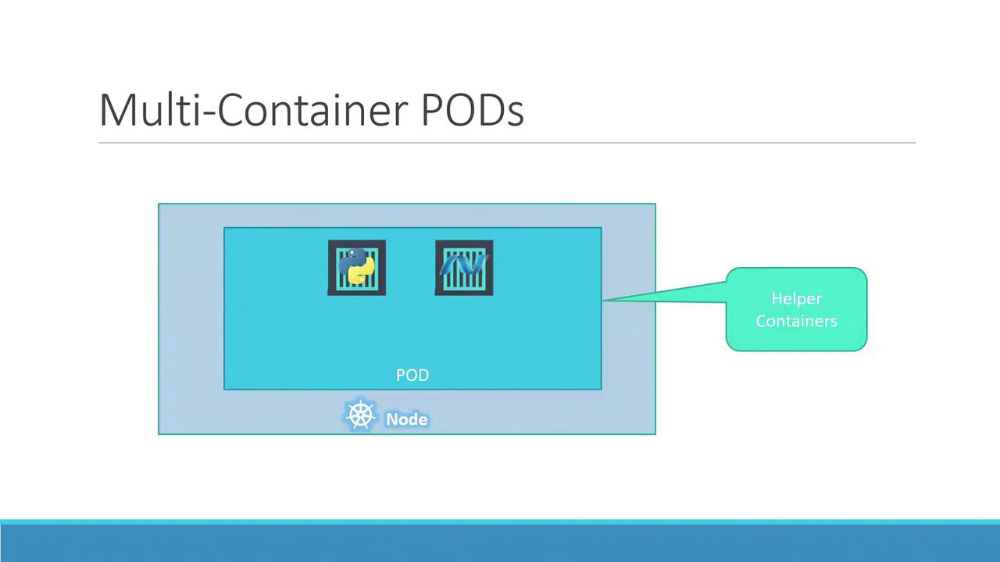
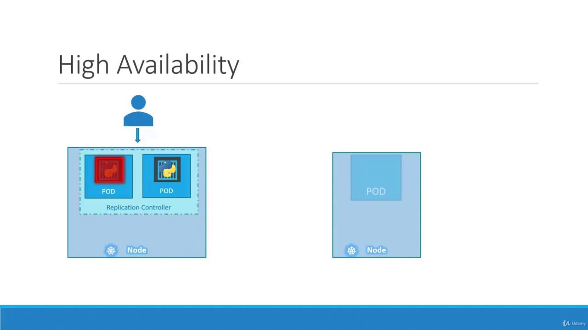
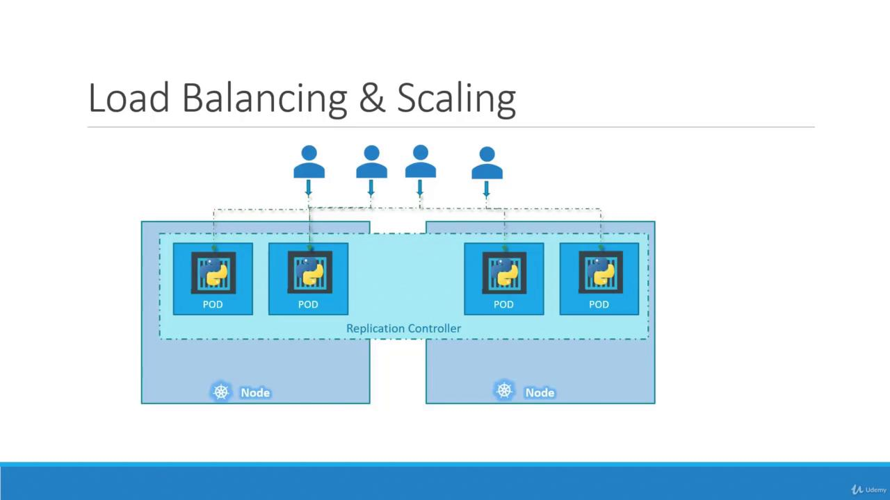
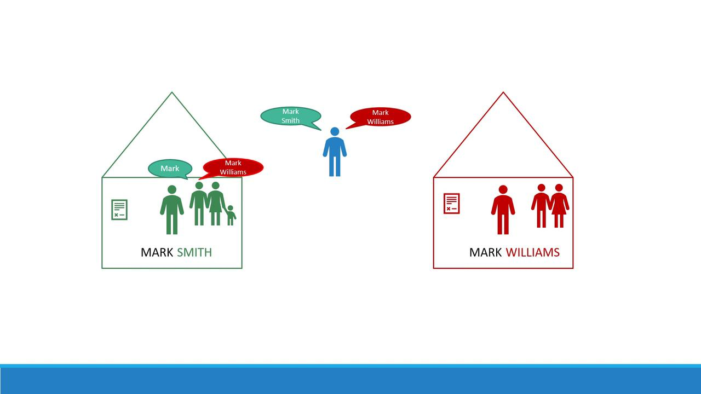
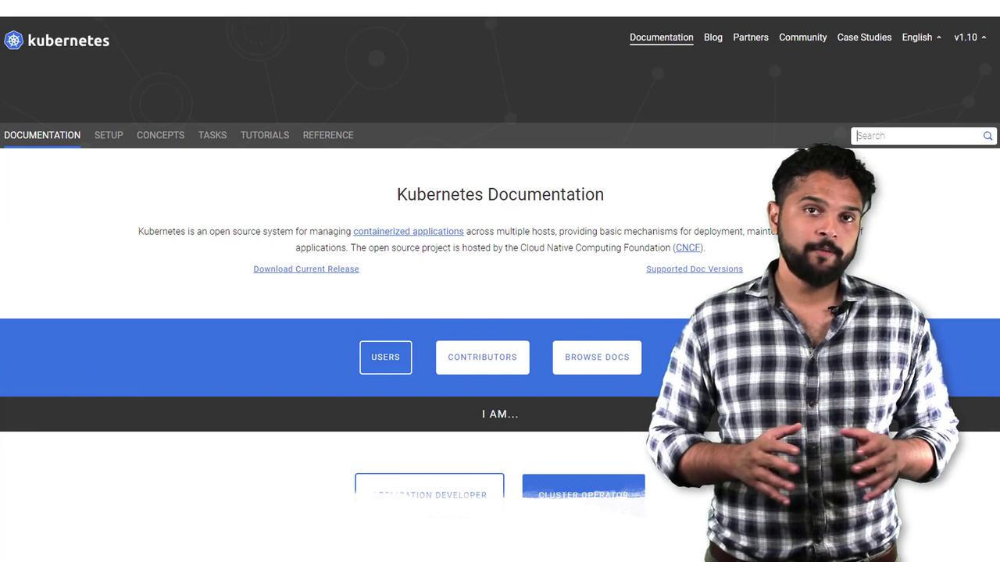

كل الأجزاء المهمة — API Server, etcd, Scheduler, Controller, Kubelet
🎮 أداة التحكم: kubectl
عشان تتحكم في محطة الفضاء بتاعتك، بتستخدم أداة اسمها kubectl:
kubectl run hello-minikube # شغّل تطبيق جديد
kubectl cluster-info # عرض معلومات المحطة
kubectl get nodes # عرض كل السفن
🔧 ركن القيادة
Node = سفينة فضاء (جهاز كمبيوتر حقيقي أو افتراضي) Cluster = مجموعة من الـNodes مع بعض = محطة الفضاء kubectl = أداة سطر الأوامر للتحكم في كل حاجة (بيتنطق: كوب-كونترول)
الدرس ٢
⚡ حرب المحركات: Docker vs ContainerD
في الأول كان في محرك واحد بس للسفن — Docker. بس بعد كده ظهرت محركات تانية. تعالى نعرف القصة! ⚡
🌌 الفكرة ببساطة
زمان، Docker كان المحرك الوحيد اللي الكوبرنيتس بيشتغل بيه.
بس مع الوقت، ناس تانية عملوا محركات جديدة. عشان كده الكوبرنيتس عمل معيار اسمه
CRI (Container Runtime Interface) — يعني أي محرك يمشي على المعيار ده يقدر يشتغل!
🛸 تشبيه الفضاء
تخيل إن Docker كان زي محرك ديزل قديم — شغال كويس بس كبير ومعقد.
ContainerD ده زي محرك كهربائي حديث — أخف، أسرع، وأبسط!
الكوبرنيتس قرر من الإصدار 1.24 إنه يشيل دعم الديزل ويشتغل بالكهرباء بس.

إزاي Docker و ContainerD بيشتغلوا مع الكوبرنيتس
🛠️ أدوات التحكم في المحركات
في ٣ أدوات مختلفة:
ctr — أداة بسيطة للتجربة والـDebugging بس
nerdctl — أداة شبه Docker بالظبط بس لـContainerD
crictl — أداة الكوبرنيتس الرسمية للتعامل مع أي محرك
# باستخدام nerdctl (زي Docker بالظبط!)
nerdctl run --name redis redis:alpine
nerdctl run --name webserver -p 80:80 -d nginx
# باستخدام crictl (أداة الكوبرنيتس)
crictl pull busybox
crictl images
crictl ps -a

مقارنة بين الأدوات الثلاثة — كل واحدة ليها استخدام مختلف
💡 نصيحة من الكابتن
متقلقش من الكلام ده! الأهم إنك تعرف إن Docker اتشال من الكوبرنيتس،
بس الـImages بتاعة Docker لسه شغالة عادي لأنها بتمشي على معيار OCI.
الكبسولة (Pod) هي أصغر وحدة في محطة الفضاء. كل تطبيق بيشتغل جوه كبسولة. تعالى نفهمها! 💊
🌌 الفكرة ببساطة
الكوبرنيتس مش بيشغل التطبيقات لوحدها كده — لأ، بيحطها جوه كبسولة (Pod).
الكبسولة دي زي غرفة صغيرة في السفينة، وجواها بيشتغل التطبيق بتاعك.
🛸 تشبيه الفضاء
الـPod = كبسولة فضاء 💊
جوه الكبسولة في Container = روبوت 🤖 بيعمل الشغل
لما محتاج شغل أكتر؟ مش بتحط روبوتات كتير في نفس الكبسولة —
بتعمل كبسولات جديدة كل واحدة فيها روبوت!

كبسولة واحدة (Pod) جوه سفينة (Node) — جواها التطبيق بتاعك
📈 إزاي نكبّر؟ (Scaling)
لما المستخدمين يزيدوا، مش بنحط حاجات أكتر جوه نفس الكبسولة —
بنعمل كبسولات جديدة! كل كبسولة = نسخة من التطبيق.
مستخدم واحد ← كبسولة واحدة
١٠٠٠ مستخدم ← كبسولات كتير موزعة على سفن مختلفة
لو السفينة اتملت ← نضيف سفينة جديدة (Node) ونحط فيها كبسولات

كل ما الضغط يزيد، نضيف كبسولات جديدة!
👬 الكبسولة الذكية: Multi-Container Pod
أحياناً الكبسولة ممكن يكون فيها أكتر من container — مثلاً container أساسي و container مساعد.
الاتنين بيشتغلوا مع بعض، بيتكلموا على localhost، وبيقفوا مع بعض.

كبسولة فيها container أساسي (Python) ومساعد (Helper) — بيشتغلوا مع بعض
🎮 يلا نجرب!
# إنشاء كبسولة بـ nginx
kubectl run nginx --image=nginx
# عرض كل الكبسولات
kubectl get pods
# النتيجة:
# NAME READY STATUS RESTARTS AGE
# nginx-8586cf59-whssr 1/1 Running 0 8s
🔧 ركن القيادة
Pod = أصغر وحدة في الكوبرنيتس، فيها container واحد أو أكتر kubectl run = أمر إنشاء Pod جديد kubectl get pods = عرض كل الكبسولات الشغالة
الدرس ٤
📝 تصميم الكبسولة بالخريطة — YAML
بدل ما نكتب أوامر طويلة كل مرة، ممكن نعمل "خريطة" (ملف YAML) بتوصف الكبسولة بتاعتنا بالظبط! 📝
🌌 الفكرة ببساطة
ملف الـYAML ده زي مخطط هندسي بيقول للكوبرنيتس: "أنا عايز كبسولة بالمواصفات دي".
كل ملف YAML في الكوبرنيتس فيه ٤ أقسام أساسية:
apiVersion — إصدار اللغة (عادةً v1)
kind — نوع الحاجة (Pod, Deployment, ...)
metadata — الاسم والـLabels
spec — المواصفات التفصيلية
📄 مثال عملي
apiVersion: v1
kind: Pod
metadata:
name: myapp-pod # اسم الكبسولة
labels:
app: myapp # ملصق للتعريف
spec:
containers:
- name: nginx-container
image: nginx # الصورة اللي هتشتغل
# إنشاء الكبسولة من الملف
kubectl create -f pod-definition.yml
# أو
kubectl apply -f pod-definition.yml
🛸 تشبيه الفضاء
الملف ده زي بلوبرنت (Blueprint) بتاع الكبسولة!
بدل ما تبني الكبسولة بإيدك كل مرة، بتدي المخطط لنظام المحطة وهو بيبنيها لوحده.
🔧 ركن القيادة
YAML = لغة بسيطة لكتابة ملفات الإعدادات (بيتنطق: يامل) kubectl create -f = أنشئ حاجة من ملف kubectl apply -f = أنشئ أو حدّث حاجة من ملف
الدرس ٥
🔄 نسخ الكبسولات — ReplicaSets
لو عندك كبسولة واحدة بس ووقعت — التطبيق هيقف! الحل؟ نعمل نسخ كتير. ده شغل الـReplicaSet! 🔄
🌌 الفكرة ببساطة
الـReplicaSet بيضمنلك إن عدد معين من الكبسولات يفضل شغال دايماً.
لو كبسولة وقعت — بيعمل واحدة جديدة مكانها تلقائياً!
🛸 تشبيه الفضاء
الـReplicaSet زي ماكينة استنساخ 🔬 — بتقولها "أنا عايز ٣ كبسولات"،
ولو واحدة اتدمرت بتستنسخ واحدة جديدة فوراً!
كمان بتوزع الكبسولات على سفن مختلفة عشان لو سفينة كلها وقعت، التطبيق يفضل شغال.

ماكينة الاستنساخ بتضمن إن الكبسولات موجودة دايماً

التكبير والتوزيع — الكبسولات بتتوزع على سفن مختلفة
# تكبير لـ 6 كبسولات
kubectl scale --replicas=6 replicaset/myapp-replicaset
# تصغير لـ 2
kubectl scale --replicas=2 replicaset/myapp-replicaset
🔧 ركن القيادة
ReplicaSet = بيضمن عدد محدد من الـPods يفضل شغال selector = بيحدد أي Pods يراقبها replicas = العدد المطلوب من النسخ
الدرس ٦
🚀 خطة الإطلاق — Deployments
الـDeployment هو الطريقة الاحترافية لإطلاق تطبيقك — بيسمحلك تعمل تحديثات تدريجية وترجع لو في مشكلة! 🚀
🌌 الفكرة ببساطة
الـDeployment ده زي خطة إطلاق ذكية. بدل ما تشغل كل الكبسولات مرة واحدة
وتدعيلهم — الـDeployment بيسمحلك:
Rolling Update — تحديث الكبسولات واحدة واحدة من غير ما التطبيق يقف
Rollback — لو التحديث فشل، ترجع للنسخة القديمة فوراً
Scaling — تكبّر أو تصغّر عدد الكبسولات بسهولة
🛸 تشبيه الفضاء
تخيل إنك عايز تحدّث كل سفن الأسطول بتاعك بمحرك جديد ✨
مش هتقف كل السفن مرة واحدة! الـDeployment بيحدّث سفينة سفينة —
ولو المحرك الجديد فيه مشكلة، بيرجّع كل حاجة زي ما كانت!
# إنشاء الـDeployment
kubectl create -f deployment-definition.yml
# عرض كل حاجة
kubectl get all
# النتيجة هتبيّن: Deployment + ReplicaSet + Pods كلهم مع بعض!
💡 نصيحة من الكابتن
لاحظ إن ملف الـDeployment شبه الـReplicaSet تقريباً — بس الفرق إن kind: Deployment!
والـDeployment بيعمل ReplicaSet تلقائياً ورا الكواليس.
🔧 ركن القيادة
Deployment = بيدير ReplicaSets ويسمح بـRolling Updates و Rollbacks kubectl get all = بيعرض كل الكائنات في الـNamespace الحالي kubectl rollout undo = الأمر السحري للتراجع عن تحديث فاشل!
الدرس ٧
🏷️ أقسام المحطة — Namespaces
محطة الفضاء الكبيرة فيها أقسام مختلفة — قسم للتطوير، قسم للإنتاج، قسم للنظام. ده بالظبط الـNamespaces! 🏷️
🌌 الفكرة ببساطة
الـNamespace ده زي قسم أو طابق في المحطة. كل قسم فيه الحاجات بتاعته،
وممكن يكون في حاجتين بنفس الاسم في قسمين مختلفين من غير أي مشكلة!
🛸 تشبيه الفضاء
تخيل في بيتين، كل بيت فيه واحد اسمه "مارك".
في البيت بنقول "مارك" وخلاص. بس لو حد من بيت تاني عايز يكلمه — بيقول الاسم كامل!
كده بالظبط: db-service في نفس الـNamespace = "مارك" db-service.dev.svc.cluster.local = "مارك سميث من البيت التاني"

زي ما في بيتين كل واحد فيه واحد اسمه مارك — الـNamespaces بتفصل الحاجات بنفس الاسم

كل قسم (Namespace) منفصل عن التاني — kube-system, Default, Dev, Prod
📦 الأقسام اللي الكوبرنيتس بيعملها تلقائياً
default — القسم العادي اللي بتشتغل فيه لو مقولتش حاجة
kube-system — قسم النظام (أنظمة DNS والشبكات) — متلعبش فيه! ⚠️
kube-public — قسم عام متاح لكل الناس
🎮 يلا نجرب!
# عرض الـPods في القسم الحالي
kubectl get pods
# عرض الـPods في قسم معين
kubectl get pods --namespace=kube-system
# إنشاء Namespace جديد
kubectl create namespace dev
# تغيير القسم الافتراضي
kubectl config set-context $(kubectl config current-context) --namespace=dev
# عرض كل الـPods في كل الأقسام
kubectl get pods --all-namespaces
💡 نصيحة من الكابتن
في الشركات الكبيرة، بيستخدموا Namespaces عشان يفصلوا بيئة التطوير (Dev) عن الإنتاج (Prod).
كده لو حد غلط في التطوير، مش هيأثر على التطبيق الحقيقي!
🔧 ركن القيادة
Namespace = قسم افتراضي داخل الكلستر لتنظيم الموارد --namespace= = بيحدد أي قسم تشتغل فيه ResourceQuota = بيحدد حد أقصى للموارد في كل قسم